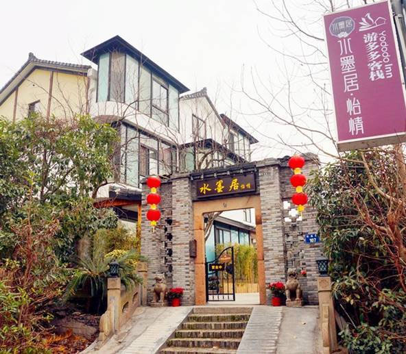
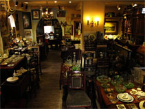

去杭州，只为寻得一袭水墨香
2015-01-26
杭州适合墨客，墨客则更适合水墨居。闹市闲庭，时光叮咚，绿树且清脆，清水落石墙。你打远方的城市而来，圆头皮鞋，蹬蹬地走着进去，这里藏着地地道道的南方溪水。偷得浮生半日闲，看看店里来自世界的天涯旧物，经过香港设计师巧妙的设计和布局，像是刹那带我们穿越回那个古老而纯朴的年代。百年老宅淘换来的一木一石，被你我惜藏流转于水墨江南的生活。在这里，可卸载人人都会的美图秀秀，尽可豪掷光阴，做不一样的文艺。

杭州水墨居怡情游多多客栈位于白乐桥。这是个好地方，适合隐居、发呆、喝茶谈笑。她背靠北高峰，面临大西湖，是西湖龙井之乡。村中有一条小溪淙淙流过，溪水清澈见底，终年不断。溪上跨着一道小石桥，边上一块石碑，上书“白乐人家”。过了桥，向右步行几分钟，就可到达灵隐寺了。3分钟北高峰，5分钟灵隐寺，15分钟西湖，1440分钟清风朗月、小竹拍肩宣墨香。

个性定制自由行程 往返机票+首晚酒店
2015/1-28
前言柏林是德国首都、也是德国最大城市。现有居民340万、是德国文化